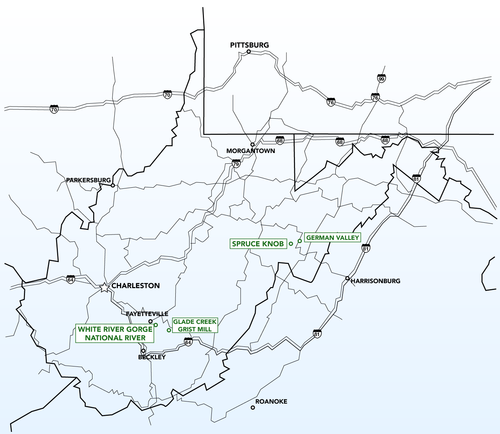
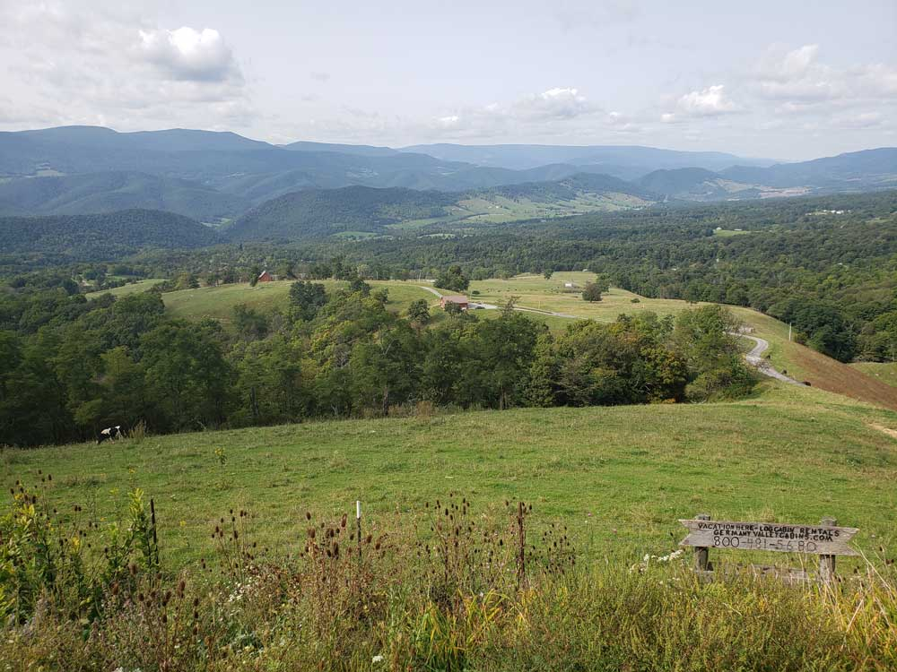
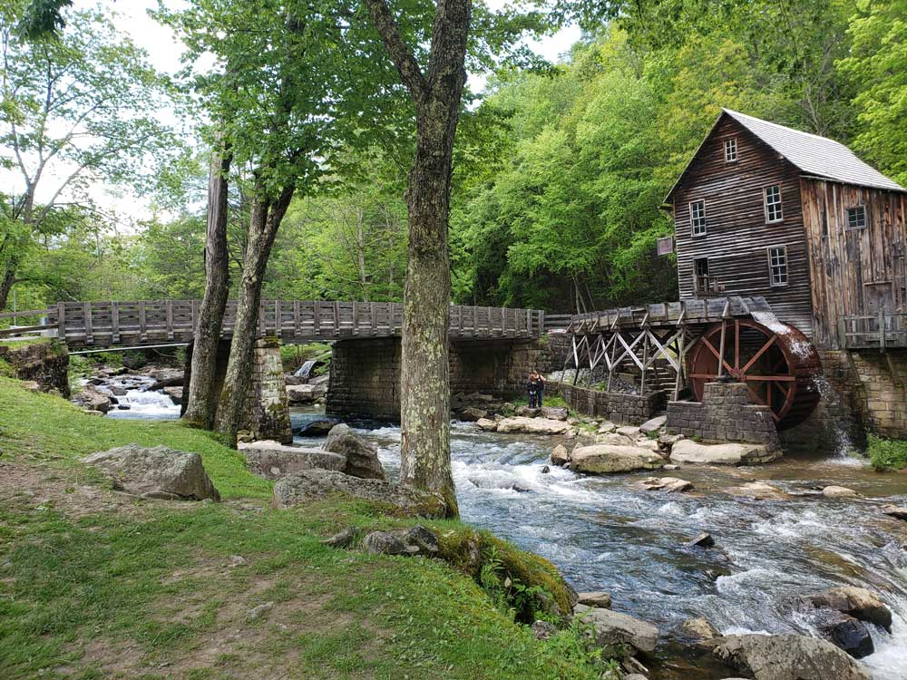
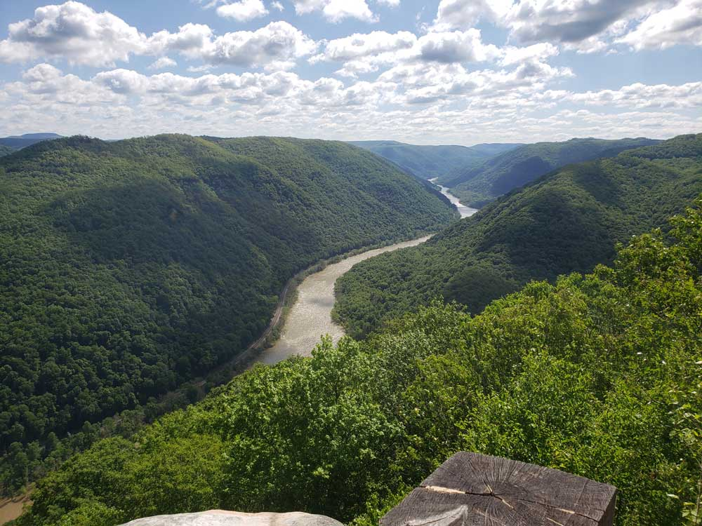
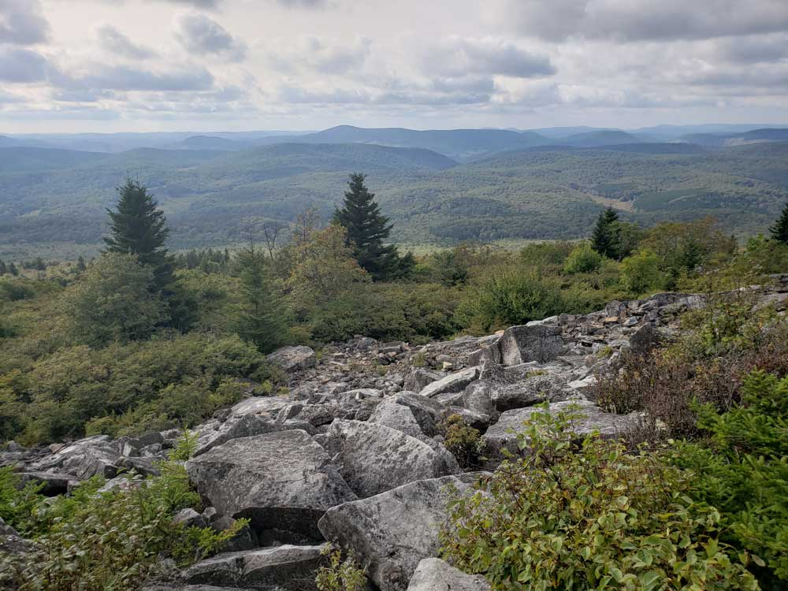

The unique position of West Virginia means it is often included in several U.S. geographical regions, including the Mid-Atlantic, the Upland South, and the Southeastern United States. The state is noted for its mountains and rolling hills, its historically significant logging and coal mining industries, and its political and labor history. It is also known for a wide range of outdoor recreational opportunities, including skiing, whitewater rafting, fishing, hiking, backpacking, mountain biking, rock climbing, and hunting.
Many tourists, especially in the eastern mountains, are drawn to the region's notable opportunities for outdoor recreation. Canaan Valley is popular for winter sports, Seneca Rocks is one of the premier rock climbing destinations in the eastern U.S., the New River Gorge/Fayetteville area draws rock climbers as well as whitewater rafting enthusiasts, and the Monongahela National Forest is popular with hikers, backpackers, hunters, and anglers. In addition to such outdoor recreation opportunities, the state offers a number of historic and cultural attractions. Harpers Ferry National Historical Park is a historic town situated at the confluence of the Shenandoah and Potomac rivers. Harpers Ferry was the site of John Brown's 1859 raid on the U.S. Armory and Arsenal. Located at the approximate midpoint of the Appalachian Trail, Harpers Ferry is the base of the Appalachian Trail Conservancy.
>Southeast > West Virginia
Map of West Virginia
Interactive West Virginia map, showing all parks, preserves, trails and other locations


German Valley
Scenic upland valley high in the Allegheny Mountains of eastern West Virginia originally settled by German (including Pennsylvania Dutch) farmers in the mid-18th Century

Glades Creek Grist Mill
Fully functional grist mill replica of the original Cooper’s Mill, which once stood on the grounds

New River Gorge National River
A 70,000-acre park offering hiking, rock climbing, rafting on a whitewater river & other activities and an Iconic steel arch bridge, one of the longest & highest in the world, spanning the river

Spruce Knob
The state's highest peak, this 4,863-ft mountain features an interpretive trail & observation tower